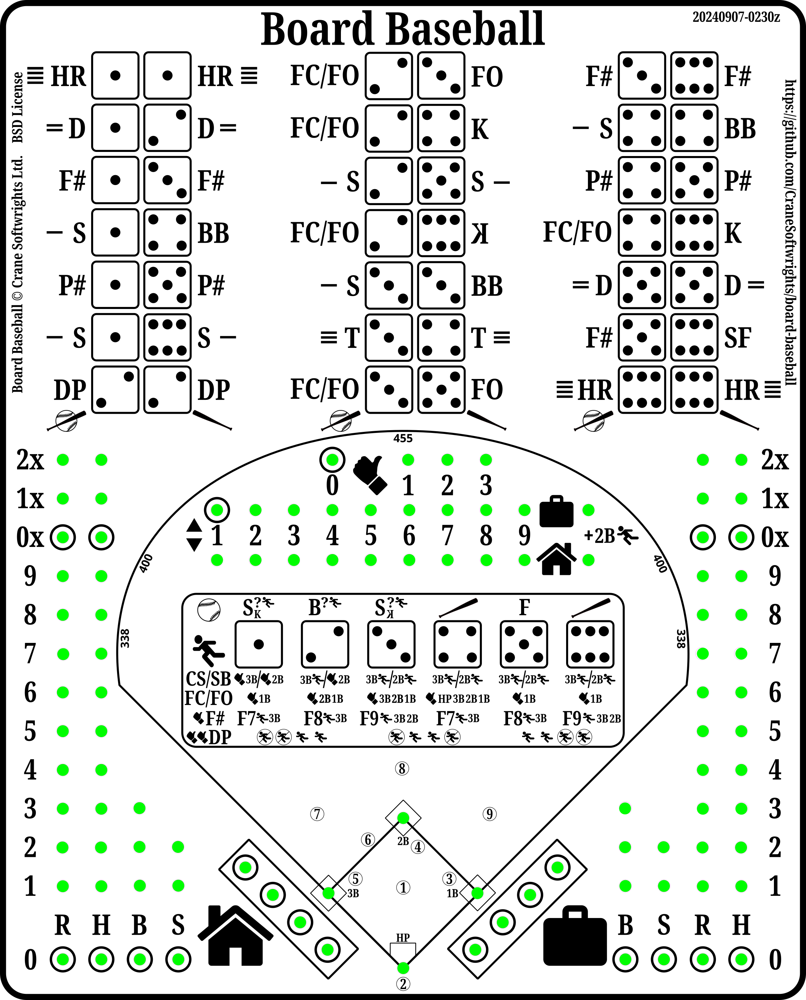

Copyright © Crane Softwrights Ltd.
Development: https://github.com/CraneSoftwrights/board-baseball
Tip jar: https://paypal.me/CraneSoftwrights
Languages (see the bottom of this page regarding adding a new language):

To add support for another language, copy the en/ directory and translate each of the
files without changing the file names. Then modify this file and
the README.md file found in each of the subdirectories
with a language entry to point to the appropriate file in the new
directory. New language files are not to be added in any of the
existing subdirectories, only the introduced language-specific
directory.